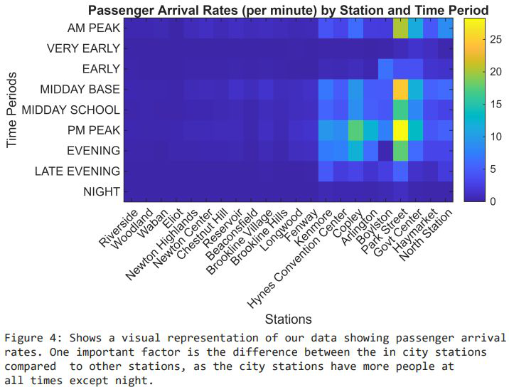
Modeling & Simulation in MATLAB
Facial recognition, transit delays, disease spread, and lighting optimization.
Overview
A collection of modeling and analysis projects in MATLAB: each one starts from a question, builds a model, and uses simulation or linear algebra to answer it. [TODO: which classes these were for, and when.]
Eigenfaces facial recognition
I implemented the Eigenfaces algorithm using PCA and nearest-neighbor classification, and analyzed how the number of principal components affects recognition accuracy. The classifier reached more than 92% accuracy on the test dataset with just 4 principal components.
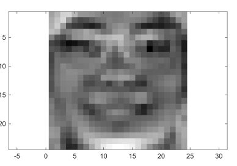
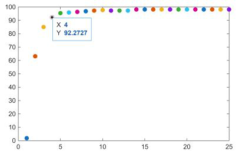
Delay on the MBTA
How does passenger arrival rate, which varies by time of day, influence expected travel delay between Riverside and North Station on the MBTA Green Line D Branch? With a teammate, I built a stochastic model using Poisson-distributed passenger arrivals and station-specific arrival-rate scaling factors from MBTA data, and ran repeated simulations across different arrival rates and times of day. As arrival rates increase, the expected delay increases, with peak travel times producing the largest delays.
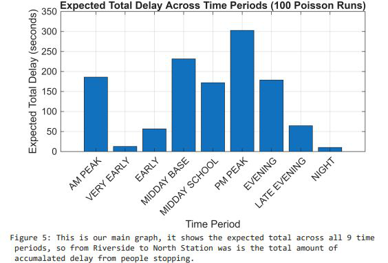
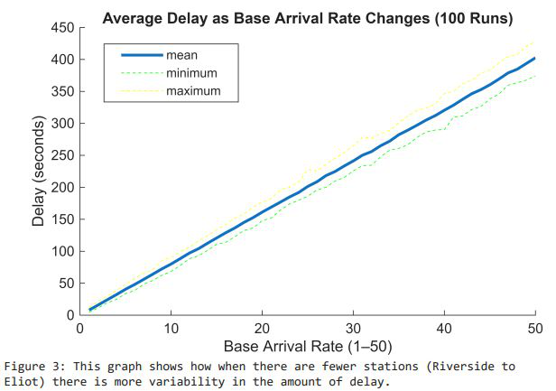
COVID-19 spread in a grocery store
How does the number of staff members in a grocery store affect the peak number of COVID-19 infections? I developed an agent-based SIR model, simulated grocery store interactions under varying staff counts, and quantified the impact of staffing levels on peak infection rates. [TODO: the key finding.]
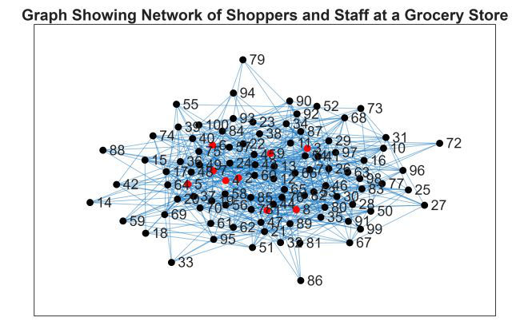
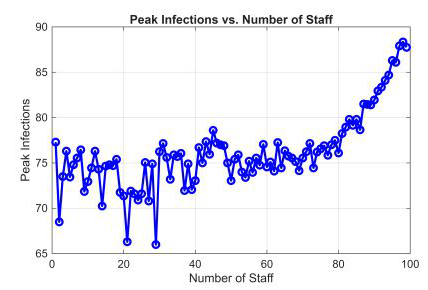
Mask effectiveness
How effective do masks need to be to cut the peak number of infected people by 50%? With a teammate, I built a stock-and-flow SIR model based on real data from the 2017 A/H3N2 flu strain and ran a parameter sweep over mask effectiveness. We found that masks need to be at least 89% effective to halve the peak number of infected people.
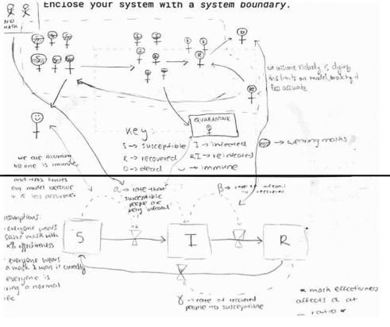
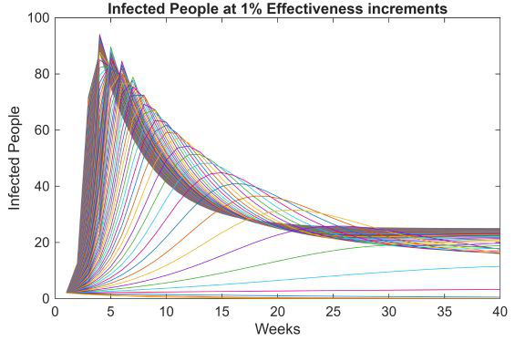
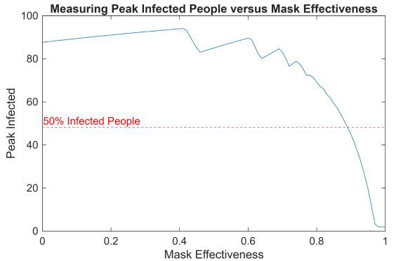
Light position optimization
For Quantitative Engineering Analysis (Fall 2025), a teammate and I asked how to place and orient a single light in a 3D room to best serve several occupants. We modeled illumination with Lambert's cosine law and the inverse-square law, scored each placement on minimum illumination, mean illumination, uniformity, and a weighted combination, and compared five strategies, from exhaustive searches over position and direction to methods based on principal component analysis of where occupants stand. Across a hundred randomized rooms, optimizing position and direction together scored highest on average.
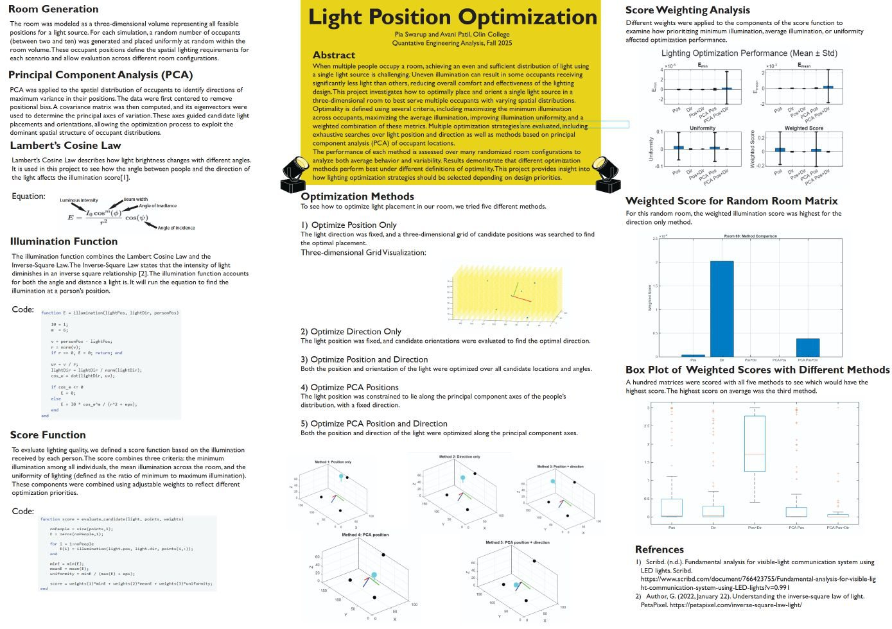